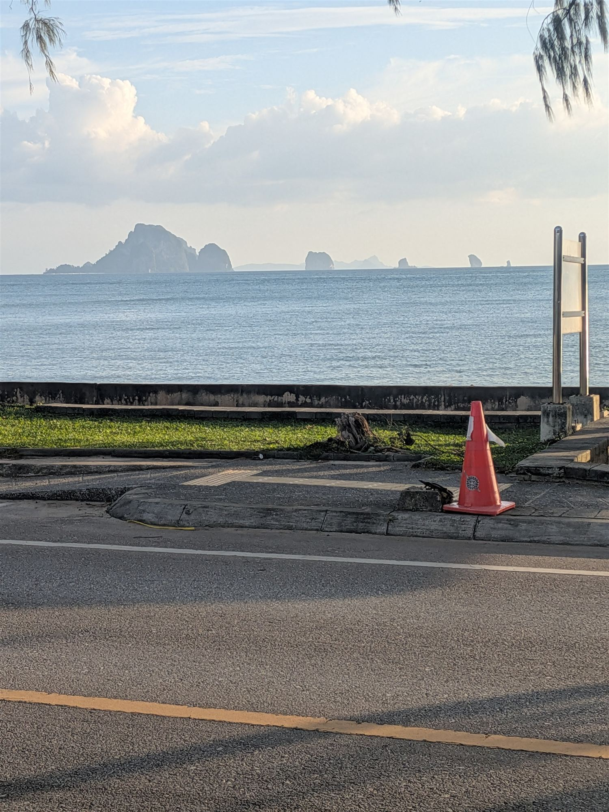

По островам
«Четыре острова» (Four Islands), острова Хонг (Hong Islands), Пхи-Пхи (Phi Phi). На длиннохвостой лодке или скоростном катере, в группе или индивидуально.
От ฿ —
เดอะ บีช บ็อกซ์Хостел из контейнеров · Ао Нанг, Краби
Утеплённые четырёхместные номера с кондиционером в ярко раскрашенных морских контейнерах, вокруг бассейна и зелёного двора, в нескольких шагах от пляжа Нопарат Тара (Noppharat Thara Beach).

Пришлите нам даты в WhatsApp или LINE, и мы оставим кровать за вами.
The Beach Box построен из переоборудованных морских контейнеров. Каждый выкрашен в свой цвет, и все они стоят под красной крышей вокруг зелёного двора. В каждом номере четыре кровати и свой кондиционер, так что соседей у вас трое, а не тридцать.
Выходите за ворота, и вы уже на дороге вдоль пляжа. До ночного рынка, кафе и круглосуточного 7-Eleven три минуты пешком.


Забронируйте одну кровать или займите весь номер с друзьями. Душевые и туалеты находятся в отдельном блоке, в нескольких шагах от вашей двери.
Посмотреть номера

Бассейн в нескольких шагах от кровати и зелёный двор с местами для отдыха у каждой двери.
Посмотреть удобстваМы находимся в той части Ао Нанга, что ближе к Нопарат Тара: это более спокойный участок пляжа, откуда длиннохвостые лодки ходят на острова, а ночной рынок Landmark совсем рядом.
| Место | Пешком |
|---|---|
| Пляж Нопарат Тара | около 30 шагов |
| Starbucks, Ao Nang Landmark | 180 м · 3 мин |
| 7-Eleven (круглосуточно) | 230 м · 3 мин |
| KFC, Ao Nang Landmark | 240 м · 3 мин |
| Ночной рынок Ao Nang Landmark | 300 м · 4 мин |
| Паромный причал, центр Ао Нанга, аэропорт Краби | добавим |


Расскажите, чего вам хочется, и мы подскажем подходящую поездку: в группе или индивидуально, на длиннохвостой лодке или на скоростном катере, на полдня или на целый день.
«Четыре острова» (Four Islands), острова Хонг (Hong Islands), Пхи-Пхи (Phi Phi). На длиннохвостой лодке или скоростном катере, в группе или индивидуально.
От ฿ —
Каякинг в мангровых зарослях, снорклинг, круизы на закате.
От ฿ —
Храм Пещеры Тигра (Tiger Cave Temple), Изумрудное озеро (Emerald Pool) и горячие источники, скалолазание на Рейли (Railay).
От ฿ —

Гастрономические прогулки по ночному рынку, уроки тайской кухни, тайский бокс (муай-тай).
От ฿ —
Трансфер от нас, такси или шаттл. Ещё до посадки мы подскажем, на какую сумму рассчитывать.
฿ —
Мы встретим вас в зале прилёта и довезём до самой двери. Попросите об этом, когда будете нам писать.
฿ —
Стойка с фиксированными ценами в терминале или общий шаттл-автобус до Ао Нанга (Ao Nang).
฿ —
Опыт одного из гостей с приложениями для заказа такси в аэропорту, его собственными словами.
Пишите в том приложении, которым уже пользуетесь. Мы отвечаем на английском и тайском.
Все способы связи